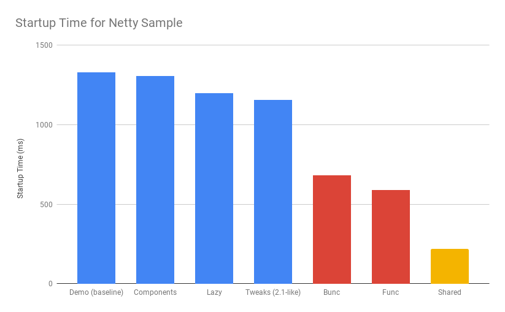

How Fast is Spring?
Dave Syer, 2018Agenda
- How much work is Spring doing, compared to other parts of your app?
- Tools for measurement
- Comparison between various classpath and packaging choices
- Speeding things up
- The future
Baseline Micro App

Heap Memory and Garbage Collection
Garbage Collection
Spring Boot 2.0 |
Spring Boot 2.1 |
How Fast is Spring?
TL;DR How do I make my app go faster?
- Classpath exclusions from Spring Boot web starters
- Use the
spring-context-indexer - Don’t use actuators if you can afford not to
- Use Spring Boot 2.1 (or 2.2) and Spring 5.1
- Use explicit
spring.config.location - Switch off JMX:
spring.jmx.enabled=false - Make bean definitions lazy by default
- Unpack the fat jar and run with an explicit classpath
- Run the JVM with
-noverify. Also consider-XX:TieredStopAtLevel=1 - Import autoconfigurations individually
- Use functional bean definition
- (Build a native image)
Summary
- Spring was designed ab initio to be lightweight
- The engineering team cares deeply about performance
- There are many optional features
- Packaging: exploded jar with application main is always best
- Server: there is no measureable difference between Tomcat, Jetty and Undertow
- Netty is a bit faster on startup - you won’t notice in a large app
- The more features you use, the more classes are loaded
- Functional bean definitions rule
- Spring Boot, HTTP: starts in <1sec and uses <10MB heap
Tools
- Benchmarks: JMH
- JUnit and JMH: microbenchmark-runner
- Profiling: async-profiler
- GC pressure: JMC a.k.a. Flight Controller
- Quick metrics for any Spring Boot jar: Benchmark launcher from dsyer/spring-boot-startup.
- Classpath manipulation: Thin Launcher
- Profiling with AspectJ
Benchmarks: Application Startup
Static benchmarks from https://github.com/dsyer/spring-boot-startup-bench. New JVM (separate process) per application startup, explicit classpath (not fat jar).
class method sample beans classes heap memory median mean range
MainBenchmark main demo 121.000 5643.000 13.360 76.726 0.935 0.948 0.017
MainBenchmark main jdbc 156.000 5794.000 14.137 78.331 1.008 1.017 0.012
MainBenchmark main actr 222.000 6182.000 15.569 83.695 1.140 1.155 0.020
StripBenchmark strip slim 103.000 5465.000 13.815 76.140 0.875 0.897 0.041
StripBenchmark strip thin 62.000 5247.000 12.810 73.781 0.810 0.827 0.023
StripBenchmark strip lite 30.000 5012.000 11.432 70.928 0.715 0.727 0.012
StripBenchmark strip func 26.000 4967.000 11.351 70.516 0.686 0.701 0.026Number of Classes vs. Startup Time
WebFlux and Micro Apps
class method sample beans classes heap memory median mean range
MainBenchmark main demo 93.000 4420.000 8.153 50.333 0.771 0.816 0.042
MainBenchmark main jlog 80.000 3649.000 6.540 44.006 0.685 0.712 0.046
MiniBenchmark boot jlog 28.000 3250.000 6.692 41.158 0.562 0.571 0.013
MiniBenchmark mini jlog 27.000 2986.000 5.421 38.561 0.516 0.524 0.014
MiniBenchmark micro jlog 2.000 2215.000 4.817 33.320 0.339 0.344 0.007JVM Tweaks
- Command line:
-noverify-XX:TieredStopAtLevel=1-Djava.security.egd=file:/dev/./urandom - Open J9: CDS
-Xquickstart -Xshareclasses -Xscmx128m - Java 10/11: CDS, AOT (GraalVM)
- Explicit classpath (exploded archive)
Classpath Exclusions
YMMV, but consider excluding:
- Jackson (
spring-boot-starter-json) - Logback (
spring-boot-starter-logging) - Hibernate Validator (
org.hibernate.validator:hibernate-validator) - Actuators (
spring-boot-starter-actuator)
Lazy Beans
- Spring Data
@EnableJpaRepositories(bootstrapMode=BootstrapMode.LAZY)orspring.data.jpa.repositories.bootstrap-mode=lazy - Look carefully at custom beans with expensive
@PostConstruct - Profiling with AspectJ
- Lazy subsystems, E.g. see Lazy Actuator
- Spring Boot 2.2:
spring.main.lazy-initialization=true
Benchmark (sample) Mode Cnt Score Error Units Faster
MainBenchmark.main empt ss 10 0.495 ± 0.008 s/op 9.91%
MainBenchmark.main jlog ss 10 0.692 ± 0.017 s/op 21.04%
MainBenchmark.main demo ss 10 0.805 ± 0.016 s/op 19.45%
MainBenchmark.main actr ss 10 0.946 ± 0.021 s/op 27.03%
MainBenchmark.main jdbc ss 10 0.860 ± 0.010 s/op 19.95%
MainBenchmark.main actj ss 10 1.015 ± 0.020 s/op 29.11%Manual Configuration
Choose your own autoconfigurations: "a la carte" instead of "all you can eat".
@SpringBootConfiguration
@ImportAutoConfiguration({
WebFluxAutoConfiguration.class,
ReactiveWebServerFactoryAutoConfiguration.class,
ErrorWebFluxAutoConfiguration.class,
HttpHandlerAutoConfiguration.class,
ConfigurationPropertiesAutoConfiguration.class,
PropertyPlaceholderAutoConfiguration.class
})
@RestController
public class DemoApplication {
...
}PetClinic Benchmarks
- Blue: out of the box Spring Boot.
- Yello: manual autoconfiguration.
- Red: fully functional via Spring Init
Functional Bean Definitions
Before:
@Configuration
public class SampleConfiguration {
@Bean
public Foo foo() {
return new Foo();
}
@Bean
public Bar bar(Foo foo) {
return new Bar(foo);
}
}Functional Bean Definitions
After:
public class SampleConfiguration
implements ApplicationContextInitializer<GenericApplicationContext> {
public Foo foo() {
return new Foo();
}
public Bar bar(Foo foo) {
return new Bar(foo);
}
@Override
public void initialize(GenericApplicationContext context) {
context.registerBean(SampleConfiguration.class);
context.registerBean(Foo.class,
() -> context.getBean(SampleConfiguration.class).foo());
context.registerBean(Bar.class, () -> context.getBean(SampleConfiguration.class)
.bar(context.getBean(Foo.class)));
}
}Result
C.f. Bunc vs Demo.
Examples
- Micro apps (
FuncApplicationandBuncApplication): https://github.com/dsyer/spring-boot-micro-apps - Spring Fu: https://github.com/spring-projects/spring-fu
- Spring Init: https://github.com/spring-projects-experimental/spring-init
- Spring Cloud Function
spring.functional.enabled=true
CPU Constrained Environments
container cpus startup(ms)
===========================
riff 4 2817
scf 4 664
riff 2 4614
scf 2 653
riff 1 16782
scf 1 2121
scf:n 1 1091- riff is the image built by pack using the riff builder
- scf same app built with WebFlux and functional beans
- scf:n also switch off background preinit
Ahead of Time Compilation (AOT)
Native images can be very efficient (see Graal VM).
$ native-image -H:Name=target/bunc ... com.example.func.BuncApplication
$ ./target/bunc
. ____ _ __ _ _
/\\ / ___'_ __ _ _(_)_ __ __ _ \ \ \ \
( ( )\___ | '_ | '_| | '_ \/ _` | \ \ \ \
\\/ ___)| |_)| | | | | || (_| | ) ) ) )
' |____| .__|_| |_|_| |_\__, | / / / /
=========|_|==============|___/=/_/_/_/
:: Spring Boot ::
...
Aug 07, 2018 11:25:13 AM org.springframework.boot.web.embedded.netty.NettyWebServer start
INFO: Netty started on port(s): 8080
Aug 07, 2018 11:25:13 AM org.springframework.boot.StartupInfoLogger logStarted
INFO: Started application in 0.036 seconds (JVM running for 0.04)
Benchmark app started
Started HttpServer: 40msDownside: you lose all of JVM benefits (debugging, manageability, dynamic compilation, optimization, garbage collection).
Also, too many issues still for general purpose use.
Links
- https://spring.io/team/dsyer - blogs
- https://github.com/dsyer/spring-boot-startup-bench - older (back to Spring Boot 1.3), fat jar data
- /static benchmarks in the same repo - newer, explores classes loaded correlation
- /flux benchmarks in the same repo - WebFlux
- Spring Fu: https://github.com/spring-projects/spring-fu
- Spring Init Experiment: https://github.com/spring-projects-experimental/spring-init
- https://github.com/dsyer/spring-boot-allocations - explore functional beans and GC pressure
- https://github.com/dsyer/spring-boot-micro-apps - functional beans and AOT (samples not benchmarks)
- https://github.com/dsyer/spring-boot-aot - AOT compilation and Graal VM
- https://github.com/mp911de/microbenchmark-runner: Microbenchmark runner with JUnit
/